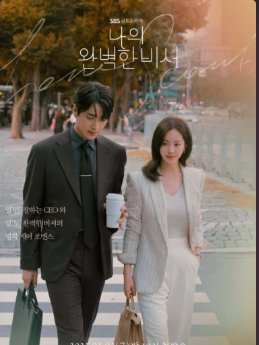
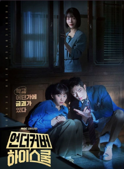

Корейські дорами 2025 року
Що таке дорами та для кого цей жанр
Дорами — це азійські телесеріали. Існує й інша їх назва — «теребі дорама». Вона виникла від англійського television drama. А щоб японцям було простіше й швидше вимовляти словосполучення, то воно спростилося.Але не варто думати, що дорами це лише мильні драми, які просто знімають в Азії. Звичайно, що частина «драми» присутня. Але її емоційність визначається власне жанром, сюжетом, героями й пристрастями, що вирують.
Узагалі дорами знімають у різних жанрах. Це і класичні драми або мелодрами, смішні комедії, страшні жахи, або захопливі бойовики чи трилери.
Навіть є музичні, спортивні дорами, або містичні. На будь-який смак і для будь-якого віку.
Розглянемо Корейські дорами 2025 року
Мій бездоганний секретар
- Рейтинг : IMDb 8.7
- Жанр : мелодрма, комедія
- Кількість серій : 12
- Актори :Хан Чі Мін, Лі Джун Хьок, Кім Те Хун, Чон Чон
- Сюжет : Кан Джі-юн, успішна бізнес-вумен, побудувала процвітаючу кадрову агенцію, але її життя цілком поглинуто роботою.
Вся її рутина кардинально змінюється, коли вона починає зближуватися з Ю Ін-хо, своїм особистим секретарем.
Їхні професійні відносини поступово переростають у щось більше.
Цей хлопець - чорний вогняний дракон
- Рейтинг : 8.3
- Жанр : комедія, романтика
- Кількість серій : 12
- Актори : Мун Ка Янг, Чой Хюн Ук, Ім Се Мі, Бан Хьо Чон
- Сюжет : Пек Су Джон - чесна, справедлива та дуже наполеглива. Вона завжди намагається відстоювати свої ідеали.
Пек Су Джон займає керівну посаду у великому універмазі.
Одного разу їй доведеться зіштовхнутися зі своїм минулим.
Старша школа під прикриттям
- Рейтинг : 8.6
- Жанр : триллер, комедія
- Кількість серій : 12